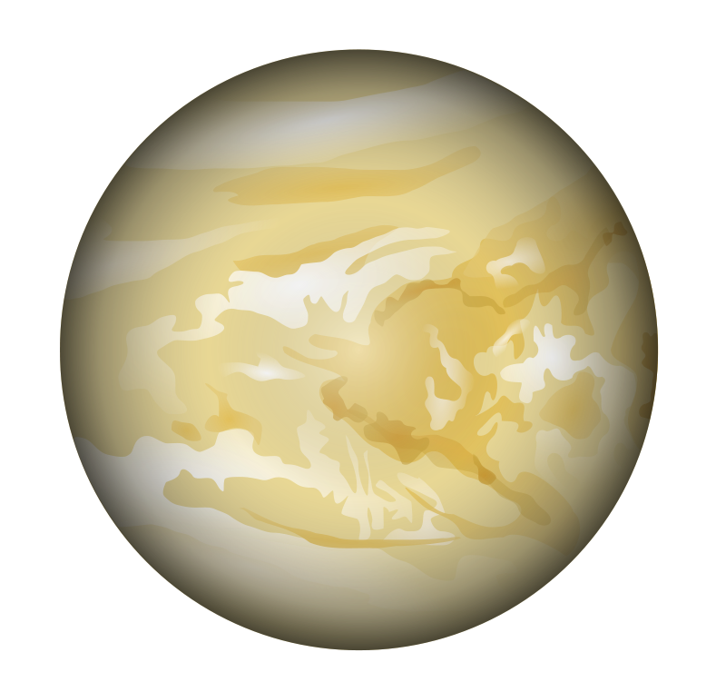
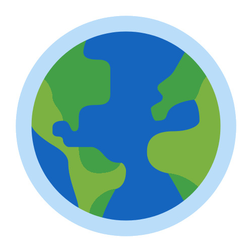
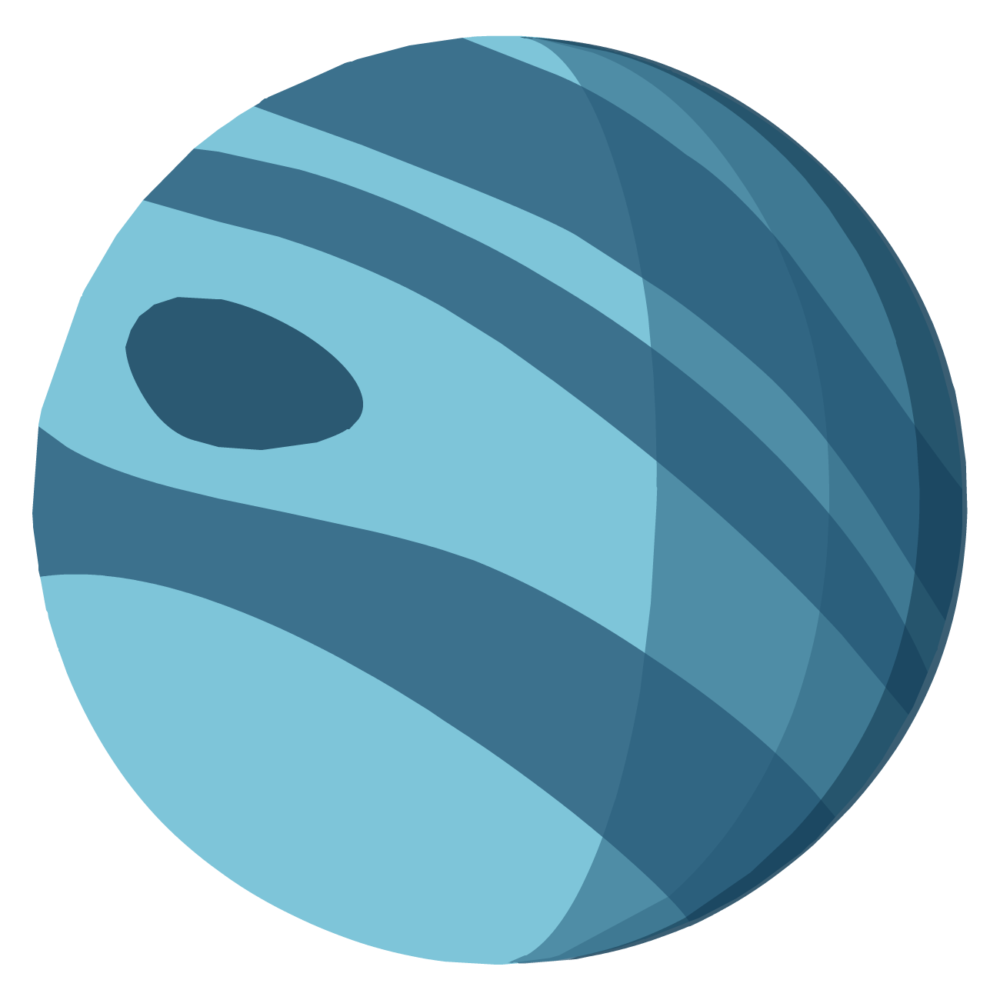

Меркурій
Меркурій — найближча до Сонця планета Сонячної
системи. Обертається навколо Сонця за 87,969 земних
діб. Меркурій належить до внутрішніх планет, оскільки його
орбіта лежить ближче до Сонця, ніж пояс астероїдів. Після
позбавлення Плутона статусу планети Меркурій є найменшою
планетою Сонячної системи.

Венера
Венера - ранкова зоря
Венера — друга від Сонця та шоста за розміром планета Сонячної системи.
Період обертання навколо Сонця — 224,7 земних діб.
Названа на честь Венери, богині кохання з римського пантеону.
Це єдина з восьми основних планет Сонячної системи, яка
отримала назву на честь жіночого божества. За розміром майже
така ж, як і Земля.


Земля
Земля — третя від Сонця планета Сонячної системи, єдина планета, на якій відоме життя,
домівка людства. Земля належить до планет земної групи і є найбільшою з цих планет у Сонячній системі.
Землю іноді називають світом, латинською назвою Терра або грецькою — Гея.

Марс
Марс — четверта планета Сонячної системи за відстанню від Сонця
та сьома за розміром і масою. Названа на честь Марса — давньоримського бога війни.
Іноді Марс називають «червоною планетою» через червонуватий колір поверхні.

Юпітер
Юпітер—п'ята від Сонця та найбільша планета Сонячної системи.
Відстань Юпітера від Сонця змінюється 740 до 814 млн км),
середня відстань 778 млн км.Разом із Сатурном, Ураном і Нептуном Юпітер
класифікують як газового гіганта.Юпітер більш ніж удвічі масивніший за всі інші
планети разом узяті;він майже в 318 разів масивніший за Землю.
Сатурн
Сатурн — шоста за віддаленістю від Сонця та друга за розмірами планета
Сонячної системи. Сатурн швидко обертається навколо своєї осі (з періодом — 10,23 години),
складається переважно з рідкого водню і гелію, має товстий шар атмосфери. Навколо Сонця Сатурн
обертається за 29,46 земних років на середній відстані 1427 млн км.

Уран
Уран — сьома від Сонця велика планета Сонячної системи,
належить до планет-гігантів. Діаметр Урана в 4 рази, а його маса —
в 14,5 раза більші за земні, що робить його третьою за діаметром та четвертою
за масою планетою Сонячної системи.
Уран став першою планетою, відкритою у Новий час і за допомогою телескопа.
Нептун
Нептун — восьмая и самая дальняя от Солнца и Земли планета Солнечной системы.
Его масса больше чем у Земли в 17,2 раза и является третьей среди планет Солнечной системы,
а по экваториальному диаметру Нептун занимает четвёртое место, превосходя Землю в 3,9 раза.
Планета названа в честь римского бога морей.
